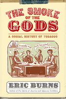

From the author of The Spirits of America, an energetic history of tobacco use
From the author of The Spirits of America, an energetic history of tobacco use


 From the author of The Spirits of America, an energetic history of tobacco use
From the author of The Spirits of America, an energetic history of tobacco use

|  |
The Smoke of the GodsA Social History of TobaccoEric Burnscloth EAN: 978-1-59213-480-9 (ISBN: 1592134807) |
A "Best of the Best from University Presses" program selection at the ALA Annual Conference, 2007
"[A] genial social history that backhandedly glorifies this 'first successful American export' while tracing its 'mesmerizing' mystique... Burns is an able writer and researcher."
—Publishers Weekly
"Fox New Watch" host Eric Burns, who chronicled the social history of alcohol in The Spirits of America turns to tobacco in The Smoke of the Gods. Ranging from ancient times to the present day, The Smoke of the Gods is a lively history of tobacco, especially in the United States.
Although tobacco use is controversial in the U.S. today, Burns reminds us that this was not always the case. For centuries tobacco was generally thought to have medicinal and even spiritual value. Most of the signers of the Declaration of Independence were tobacco users or growers, or both. According to Burns, tobacco changed the very course of U.S. history, because its discovery caused the British to support Jamestown, its struggling New World colony.
An entertaining and informative look at a subject that makes daily news headlines, The Smoke of the Gods is a history that is, well, quite addictive.
"Burns tells good stories about people's fascination with tobacco, especially as 'smoke,' and understands well the connections between advertising and smoking. His book is especially useful regarding responses to tobacco consumption including revealing account of 19th-century antitobacco reform and the scientific and social arguments against it in recent years."
—Library Journal
"Today, tobacco is universally recognized as toxic, and its consumption is a major public-health problem. As this wide-ranging and informative survey indicates, this consensus is relatively new. Burns, host of Fox News Watch on the Fox News Channel, traces the cultivation and consumption of tobacco from the pre-Columbian era to the present. For various Native American groups, smoking had a quasi-religious function, and tobacco was thought to cure stomach pains, snakebites, and, incredibly, asthma. The English were introduced to the plant with the founding of the Jamestown colony. Although King James I condemned it as a 'noxious weed,' the planting and sale of tobacco made the colony economically viable, as smoking rapidly advanced in Europe. Although many states in the U.S. tried to restrict smoking in the late nineteenth century, those efforts were futile, and Burns illustrates how twentieth-century advertising made outrageous claims about the benefits of various brands of cigarettes. This well-written account should appeal to the general reader."
—Booklist
"entertaining...[a] fascinating, supremely readable historical account."
—The Chicago Sun-Times
"lively...entertaining...Burns clearly depicts how the tobacco culture, which had thrived in America through its entire history, began to crumble."
—American Heritage
"[A]n entertaining account of one of our most familiar national vices...This is narrative history with a lively, light touch and will likely find a willing audience...The author aims to entertain and inform, and he does both very well."
—Virginia Quarterly Review
Also available in e-book
Introduction: The Ancient World
1. The Old World
2. The Enemies of Tobacco
3. The Politics of Tobacco
4. The Rise of Tobacco
5. Rush to Judgment
6. Ghost, Body and Soul
7. The Cigarette
8. The Carry Nation of Tobacco
9. The Last Good Time
10. The Case Against Tobacco
11. The Turning Point
Epilogue: "The Ten O'Clock People"
Acknowledgments
Notes
Bibliography
Index
 | Eric Burns is the host of "Fox News Watch" on the Fox News Channel. He was named by the Washington Journalism Review as one of the best writers in the history of broadcast journalism. His other books include The Spirits of America: A Social History of Alcohol (Temple), Broadcast Blues, The Joy of Books, and Infamous Scribblers. |
General Interest
American Studies
History
© 2015 Temple University. All Rights Reserved. This page: http://www.temple.edu/tempress/titles/1841_reg.html.